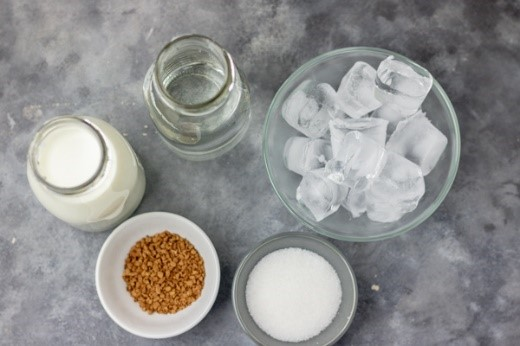

ICED COFFEE
Iced coffee history
 Mazagran, a cold, sweetened coffee beverage that originated in Algeria circa 1840, has been described by locals as "the original iced coffee".
It was prepared with coffee syrup and cold water.
Frozen coffee beverages, similar to slush, are documented in the 19th century. Similar is the Italian granita al caffè.
Coffee brewed then chilled with ice, called "iced coffee", appears in menus and recipes in the late 19th century.
Iced coffee was popularized by a marketing campaign of the Joint Coffee Trade Publicity Committee of the United States in 1920.
Much later, it was marketed by chain outlets like Burger King, Dunkin' Donuts and Starbucks.
Mazagran, a cold, sweetened coffee beverage that originated in Algeria circa 1840, has been described by locals as "the original iced coffee".
It was prepared with coffee syrup and cold water.
Frozen coffee beverages, similar to slush, are documented in the 19th century. Similar is the Italian granita al caffè.
Coffee brewed then chilled with ice, called "iced coffee", appears in menus and recipes in the late 19th century.
Iced coffee was popularized by a marketing campaign of the Joint Coffee Trade Publicity Committee of the United States in 1920.
Much later, it was marketed by chain outlets like Burger King, Dunkin' Donuts and Starbucks.
Iced coffee is a coffee beverage served cold. It may be prepared either by brewing coffee normally (i.e. carafe, French press, etc.)
and then serving it over ice or in cold milk, or by brewing the coffee cold. In hot brewing, sweeteners and flavoring may be added before cooling, as they dissolve faster.
Iced coffee can also be sweetened with pre-dissolved sugar in water.
Pre-packaged iced coffee is available as a grocery item in several countries, though without ice.
Iced coffee is also regularly available in most coffee shops.
Iced coffee is generally brewed at a higher strength than normal coffee, since it is diluted by the melting ice
Iced coffee may be served already chilled, or poured hot over ice. Because sugar does not dissolve readily into cold liquids,
it must be added either directly to the hot base, or to the finished product in the form of syrup.
Ingredients

Instant coffee: of choice, you can use any brand of instant coffee you have.
You can also use flavoured coffee too. Try not to go crazy with these premade flavoured coffee as some of them taste very weird.
Mostly stick with the good plain coffee granule and add flavoured syrup if need be.
Sugar: You can use brown sugar,granulated sugar, coconut sugar, sweetener, stevia or any type of sweetener you want.
Chilled water: Use water that has been in the fridge.
Simply place some water in the fridge few minutes before making the beverage so it is colder than what we get from the tap.
Warm water: yes, you read right, you only need a little bit.
I found that the best way to make smooth iced coffee is by dissolving the coffee and sugar first with warm water before diluting with more water and milk.
Milk: Any type of milk works for this recipe. Condensed milk works too.
Ice: lots of it. You have to be careful how much you add especially if you are having this on the go.
You don’t want the ice to water down the drink. You can also drink this non-alcoholic beverage without ice.
Coffee stirrer or latte spoon
Glass: to serve the drink.
How to make a perfect iced coffee at home
- Fill the glass full to the rim with ice. If you really want to get serious about your iced coffee,
you can make ice cubes out of coffee too. Then you won’t get that “watered-down” effect.
And if you’re into that flavored sort of coffee then go for it.
- Pour room temperature (or chilled) coffee into the glass.
Fill it almost to the top.
- Pour in the white stuff. Here’s where you get to make a big decision. Do you want to go all out and make this a decadent treat? If so, then add cream or half & half.
If you want to go a little lighter, use whole milk or fat-free half & half. And lighter still, use nonfat milk
- Take a moment to watch the swirls sink to the bottom and mix in with the coffee. It’s a magical moment. 🙂
- Add a couple spoonfuls of sugar (if you like sweet)… or whatever sort of sweetener you usually add to your coffee.
- Stir it all up!
Tips

- You can add any flavoured extract of choice to this drink.
The easiet one that comes to mind is vanilla extract and salted caramel extract but you can use any that you have.
- Use more milk to coffee and add vanilla extract to make iced vanilla latte.
- If you using condensed milk, you do not need to add extra milk.
- You can make this beverage to suit your dietary needs,
vegan, vegetarian, keto-friendly by making some smart swaps with the ingredients used.
- Swap the sugar for vanilla sugar syrup.
- Make this recipe with cold brew coffee instead using 1 part coffee, 1 part milk.